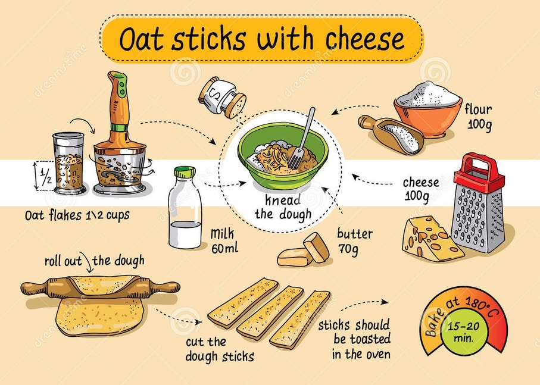
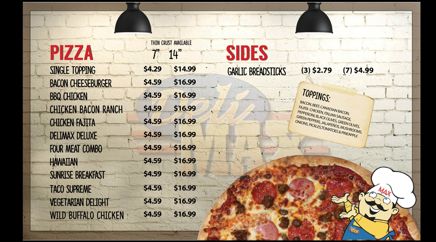

Описує процес обчислення у вигляді заданої послідовності інструкцій, що змінюють стан програми. Опис того, як щось виконується.
Імперативний стиль програмування - це такий стиль, що надає машині набір детальних інструкцій для виконання задачі. Наприклад, цикл for, який надає точні вказівки для ітерації по індексам масиву.
Можна провести аналогію з рецептом приготування страви. Рецепт - це набір покрокових інструкцій для отримання бажаного результату.
Описує те, що ми хочемо отримати у підсумку, а не спосіб це зробити. Порядок виконання і спосіб досягнення - неважливі.
Коли ми пишемо HTML-код, то декларативно, за допомогою тегів та атрибутів, описуємо те, що хочемо отримати у підсумку. Браузер читає цей код і сам виконує всі необхідні операції для створення HTML-елементів і розміщення їх на сторінці.
Можна провести аналогію з меню ресторану. Це декларативний набір страв, які можна замовити, подробиці приготування і подачі яких приховані.
Декларативний опис задачі наочніше і легше формулюється. Ми кажемо, що хочемо зробити, викликаючи метод або функцію. Її реалізація, найімовірніше, використовує імперативний код, але він прихований всередині і не ускладнює розуміння основного коду.
Розглянемо різницю підходів на прикладі базової операції фільтрації колекції. Напишемо код перебирання і фільтрації масиву чисел за певним критерієм.
// Імперативний підхід
const numbers = [1, 2, 3, 4, 5];
const filteredNumbers = [];
for (let i = 0; i < numbers.length; i += 1) {
if (numbers[i] > 3) {
filteredNumbers.push(numbers[i]);
}
}
console.log(filteredNumbers); // [4, 5]
Метод filter() приховує в собі логіку перебирання колекції і викликає callback-функцію, яку ми йому передаємо для кожного елемента, повертаючи масив елементів, що відповідають критерію.
// Декларативний підхід const numbers = [1, 2, 3, 4, 5]; const filteredNumbers = numbers.filter(value => value > 3); console.log(filteredNumbers); // [4, 5]
Відповідь
Відповідь
Відповідь
Відповідь
Відповідь
Відповідь
Відповідь